1과목: 유통물류일반
1. 수요의 가격탄력성 크기를 결정하는 요인과 관련된 설명으로 가장 옳지 않은 것은?
2. 유통비용을 최소화시킬 수 있는 유통시스템 설계를 위한 유통경로의 길이 결정 시 파악해야 할 요소 중 상품요인과 관련된 것만으로 옳게 나열된 것은?
3. 조직 내에서 일반적으로 발생할 수 있는 갈등의 순기능적 역할에 대한 설명으로 가장 옳지 않은 것은?
4. 유통산업발전법(법률 제18310호, 2021.7.20., 타법개정)에 의거하여 아래 글상자 괄호 안에 공통적으로 들어갈 단어로 옳은 것은?
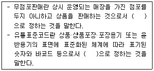
5. 아래 글상자의 6시그마 실행 단계를 순서대로 바르게 나열한 것은?
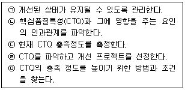
6. 동기부여와 관련된 여러 가지 학설에 대한 설명으로 옳지 않은 것은?
7. 화인 표시의 종류와 설명의 연결이 옳지 않은 것은?
8. 물류합리화 방안의 하나인 포장 표준화에 관한 내용으로 옳지 않은 것은?
9. 물류비를 분류하는 다양한 기준 중에서 지급형태별 물류비로만 옳게 나열된 것은?
10. 제품수명주기 단계 중 성숙기에 사용할 수 있는 마케팅 믹스 전략으로 옳지 않은 것은?
11. 제품이 고객에게 인도되기 전에 품질요건이 충족되지 못함으로써 발생하는 품질관리 비용으로 옳은 것은?
12. 소매점에서 발생할 수 있는 각종 비윤리적 행동에 대한 대처방안으로 옳지 않은 것은?
13. 아래 글상자 내용 중 글로벌 유통산업 환경변화의 설명으로 옳은 것을 모두 고르면?
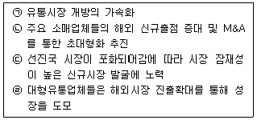
14. 테일러의 기능식 조직(functional organization)에 대한 단점으로 옳지 않은 것은?
15. 유통기업에 종사하는 종업원의 권리로 옳지 않은 것은?
16. 도매상의 혁신전략과 내용 설명이 옳지 않은 것은?
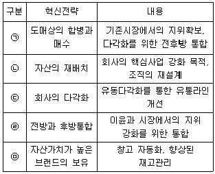
17. 유통경로 기능에 관한 설명으로 옳지 않은 것은?
18. 아래 글상자에서 설명하는 유통경영조직의 원칙으로 옳은 것은?
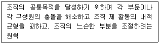
19. 최상위 경영전략인 기업 수준의 경영전략으로 옳지 않은 것은?
20. 마이클 포터의 5가지 세력 모델과 관련한 설명으로 옳지 않은 것은?
21. 아래 글상자 괄호 안에 들어갈 보관 원칙 정의가 순서대로 바르게 나열된 것은?
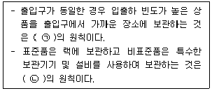
22. 도소매 물류서비스에서 고객서비스에 영향을 주는 요인에 대한 설명으로 옳지 않은 것은?
23. 유통경영환경 분석을 위한 SWOT 분석 방법의 활용에 관한 설명으로 옳지 않은 것은?
24. 증권이나 상품과 같은 기업의 자산을 미리 정해 놓은 기간에 정해 놓은 가격으로 사거나 파는 권리인 옵션과 관련된 설명으로 옳지 않은 것은?
25. 모바일 쇼핑의 주요한 특성으로 옳지 않은 것은?
2과목: 상권분석
26. 경쟁점포가 상권에 미치는 일반적 영향에 관한 설명으로 가장 옳은 것은?
27. 상권을 규정하는 요인에 대한 설명으로 옳지 않은 것은?
28. 상권에 대한 일반적인 설명으로 가장 옳지 않은 것은?
29. 크기나 정도가 증가할수록 소매점포 상권을 확장시키는 요인으로서 가장 옳은 것은?
30. 신규로 소매점포를 개점하기 위한 준비과정의 논리적 순서로서 가장 옳은 것은?
31. 소매점포의 입지는 도로조건 즉, 해당 부지가 접하는 도로의 성격과 구조에 따라 영향을 받는다. 도로조건에 대한 일반적 평가로서 가장 옳지 않은 것은?
32. 점포를 이용하는 소비자나 점포 주변 거주자들로부터 자료를 수집하여 현재 영업 중인 점포의 상권범위를 파악하려는 조사기법으로 보기에 가장 적합하지 않은 것은?
33. 점포입지의 매력성에 영향을 미치는 요인들을 상권요인과 입지요인으로 구분할 수 있다. 입지요인으로 가장 옳은 것은?
34. 소매입지 유형과 아래 글상자 속의 입지특성의 올바르고 빠짐없는 연결로서 가장 옳은 것은?
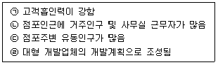
35. “유통산업발전법”(법률 제18310호, 2021. 7. 20., 타법개정)이 정한 “전통상업보존구역”에 “준대규모점포”를 개설하려고 할 때 개설등록 기한으로서 옳은 것은?
36. 소비자가 상권 내의 세 점포 중에서 하나를 골라 어떤 상품을 구매하려고 한다. 세 점포의 크기와 점포까지의 거리는 아래의 표와 같다. Huff모형을 이용할 때, 세점포에 대해 이 소비자가 느끼는 매력도의 크기가 큰 것부터 제대로 나열된 것은? (단, 소비자의 점포크기에 대한 민감도 = 1, 거리에 대한 민감도 모수 = 2로 계산)
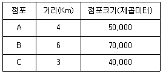
37. 대형마트, 대형병원, 대형공연장 등 대규모 서비스업종의 입지 특성에 대한 아래의 내용 중에서 옳지 않은 것은?
38. 지리학자인 크리스탈러(W. Christaller)의 중심지이론의 기본적 가정과 개념에 대한 설명으로 옳지 않은 것은?
39. 대형 쇼핑센터의 주요 공간구성요소에 대한 설명으로서 가장 옳은 것은?
40. 소매점의 상권분석은 점포를 신규로 개점하는 경우에도 필요하지만 기존 점포의 경영을 효율화 하려는 목적으로도 다양하게 활용될 수 있다. 상권분석의 주요 목적으로 보기에 가장 연관성이 떨어지는 것은?
41. 점포의 매매나 임대차시 필요한 점포 권리분석을 위해서 공부서류를 이용할 수 있다. 이들 공부서류와 확인 가능한 내용의 연결이 옳지 않은 것은?
42. 상권분석 과정에 활용도가 큰 지리정보시스템(GIS)에 관한 설명으로서 가장 옳지 않은 것은?
43. 상권분석 과정에서 점포의 위치와 해당 점포를 이용하는 소비자의 분포를 공간적으로 표현할 때 보편적으로 관찰되는 거리감소효과(distance decay effect)에 대한 설명으로 옳지 않은 것은?
44. 아래 글상자의 내용에서 말하는 장단점은 어떤 형태의 소매점포 출점에 대한 내용인가?
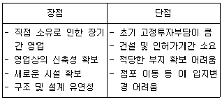
45. 확률적으로 매출액이나 상권의 범위를 예측하는 상권분석 기법들에서 이론적 근거로 이용하고 있는 Luce의 선택공리와 관련이 없는 것은?
3과목: 유통마케팅
46. 광고 매체를 선정할 때 고려해야 할 여러 가지 요인에 대한 설명으로 옳지 않은 것은?
47. 매장 레이아웃(layout)에 대한 설명으로 가장 옳지 않은 것은?
48. 전략적 CRM(customer relationship management)의 적용과정으로서 가장 옳지 않은 것은?
49. 도매상의 마케팅믹스전략에 관한 설명으로 가장 옳지 않은 것은?
50. 소매업체들의 서비스 마케팅 관리를 위한 서비스마케팅믹스(7P)로 옳지 않은 것은?
51. 머천다이징의 개념에 관한 설명 중 가장 옳지 않은 것은?
52. 구매자들을 라이프 스타일 또는 개성과 관련된 특징들을 근거로 서로 다른 시장으로 세분화하는 것을 지칭하는 개념으로 옳은 것은?
53. 제품믹스(product mix) 또는 제품포트폴리오(product portfolio)의 특성 중에서 “제품라인 내 제품품목(product item)의 수”를 일컫는 말로 옳은 것은?
54. 아래 글상자의 ( ㉠ )과 ( ㉡ )에 들어갈 용어로 가장 옳은 것은?
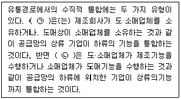
55. 아래 글상자의 내용과 관련하여 가장 옳지 않은 것은?
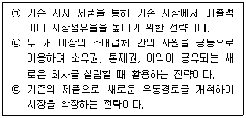
56. 로열티 프로그램으로 가장 옳지 않은 것은?
57. 시각적 머천다이징에 대한 아래의 설명 중에서 가장 옳지 않은 것은?
58. 아래 글상자의 괄호 안에 들어갈 소매업 발전이론으로 옳은 것은?
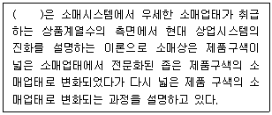
59. 제품에 맞는 판매기법으로 가장 옳지 않은 것은?
60. 옴니채널(omni-channel)의 특징으로 옳지 않은 것은?
61. 고객의 개인정보보호에 관한 내용으로 가장 옳지 않은 것은?
62. CRM과 eCRM을 비교하여 설명한 내용으로 가장 옳은 것은?
63. 아래 글상자의 조사 내용 중에서 비율척도로 측정해야 하는 요소만을 나열한 것으로 옳은 것은?
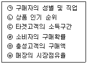
64. 다단계 판매에 대한 설명으로 옳지 않은 것은?
65. 소매업체 입장에서 특정 공급자의 개별품목 또는 재고관리 단위를 평가하는 방법으로 가장 옳은 것은?
66. 아래 글상자에서 설명하는 경로 구성원들 간의 갈등이 발생하는 원인으로 가장 옳은 것은?
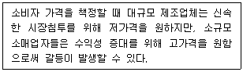
67. 원가가산법(cost plus pricing)에 의한 가격책정에 관한 설명으로 가장 옳지 않은 것은?
68. 아래 글상자의 내용에 해당되는 마케팅조사 기법으로 가장 옳은 것은?
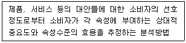
69. 매장의 내부 환경요소로 가장 옳지 않은 것은?
70. 종적인 공간효율을 개선시키고 진열선반의 높이가 낮을 때는 위에서 아래로 시선을 유도하는 페이싱 방법으로 가장 옳은 것은?
4과목: 유통정보
71. QR 코드에 대한 설명으로 가장 옳지 않은 것은?
72. 최근 유통분야에서 인공지능 기술의 활용이 증대되면서 유통업무 혁신을 위한 다양한 가능성을 보여주고 있다. 이에 대한 설명으로 가장 옳지 않은 것은?
73. 데이터 유형 분류와 그 특성에 대한 설명으로 가장 옳지 않은 것은?
74. CRM을 통해 성공적으로 고객을 관리하고 있음을 추적하기 위해 사용할 수 있는 지표로 가장 옳지 않은 것은?
75. 최근 개인정보보호 문제가 중요한 이슈로 대두되고 있다. 아래 글상자는 하버드 대학교 버크만 센터에서 제시한 개인정보보호 AI윤리원칙이다. ㉠과 ㉡에 해당하는 각각의 권리로 가장 옳은 것은?
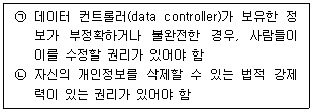
76. 산업혁명에 따른 기업의 비즈니스 환경 변화에 대한 설명으로 가장 옳은 것은?
77. 아래 글상자의 괄호 안에 공통적으로 들어갈 용어로 가장 옳은 것은?
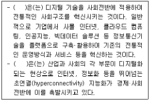
78. 조직에서 의사결정을 할 때 활용되는 정보와 조직 수준과의 관계에 대한 설명 중 가장 옳지 않은 것은?
79. 아래 글상자의 괄호 안에 공통적으로 들어갈 용어로 가장 옳은 것은?
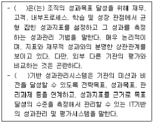
80. 아래 글상자의 괄호 안에 들어갈 용어로 가장 옳은 것은?
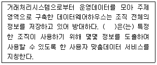
81. 아래 글상자의 기사 내용과 관련성이 높은 정보기술용어로 가장 옳은 것은?
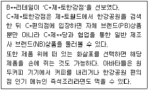
82. 산업별 표준화가 반영된 바코드에 대한 설명으로 가장 옳지 않은 것은?
83. 아래 글상자의 괄호 안에 공통적으로 들어갈 용어로 가장 옳은 것은?
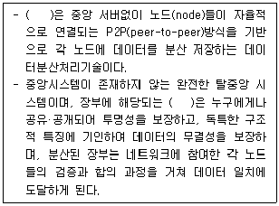
84. 웹 3.0과 관련된 설명으로 가장 옳지 않은 것은?
85. 아래 글상자의 괄호 안에 들어갈 용어로 가장 옳은 것은?
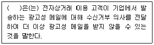
86. 빅데이터의 핵심 특성 3가지를 바르게 나열한 것은?
87. 아래 글상자에서 설명하는 서비스와 관련된 용어로 가장 옳은 것은?(오류 신고가 접수된 문제입니다. 반드시 정답과 해설을 확인하시기 바랍니다.)
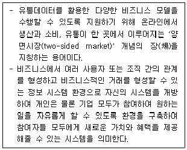
88. 아래 글상자는 인증방식 분류에 대한 설명이다. ㉠, ㉡에 해당하는 용어로 가장 옳은 것은?
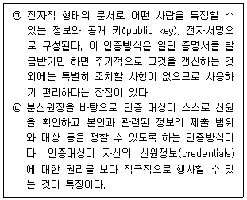
89. 아래 글상자의 괄호 안에 공통적으로 들어갈 용어로 가장 옳은 것은?
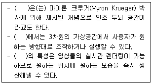
90. 아래 글상자의 ㉠과 ㉡에 해당되는 용어로 가장 옳은 것은?
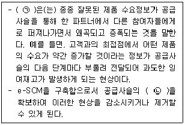